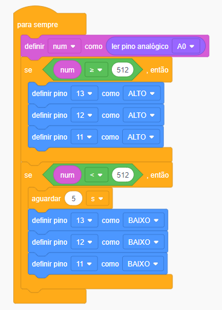

Controle de Iluminação

// C++ code
//
int num = 0;
void setup()
{
pinMode(A0, INPUT);
pinMode(13, OUTPUT);
pinMode(12, OUTPUT);
pinMode(11, OUTPUT);
num = 0;
}
void loop()
{
num = analogRead(A0);
if (num >= 512) {
digitalWrite(13, HIGH);
digitalWrite(12, HIGH);
digitalWrite(11, HIGH);
}
if (num < 512) {
delay(5000); // Wait for 5000 millisecond(s)
digitalWrite(13, LOW);
digitalWrite(12, LOW);
digitalWrite(11, LOW);
}
}
Nesta imagem, podemos abservar a medição do resistor de 10k, caracterizado pelas cores Marrom, Preto e Laranja
